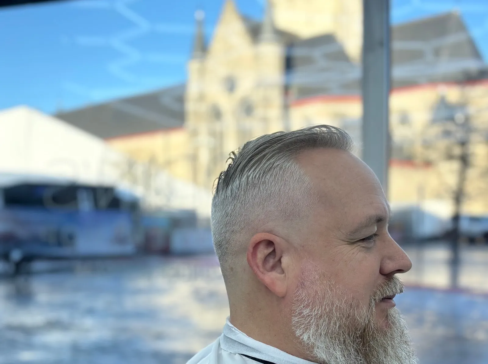
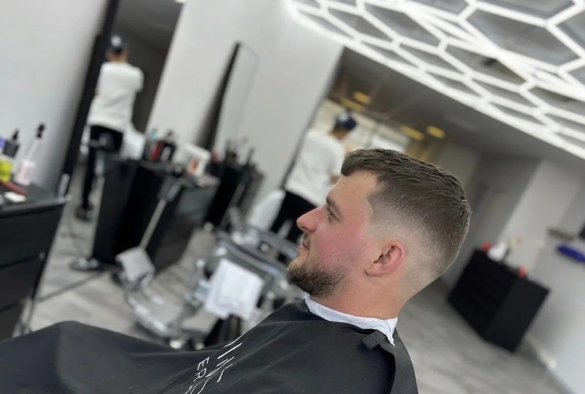
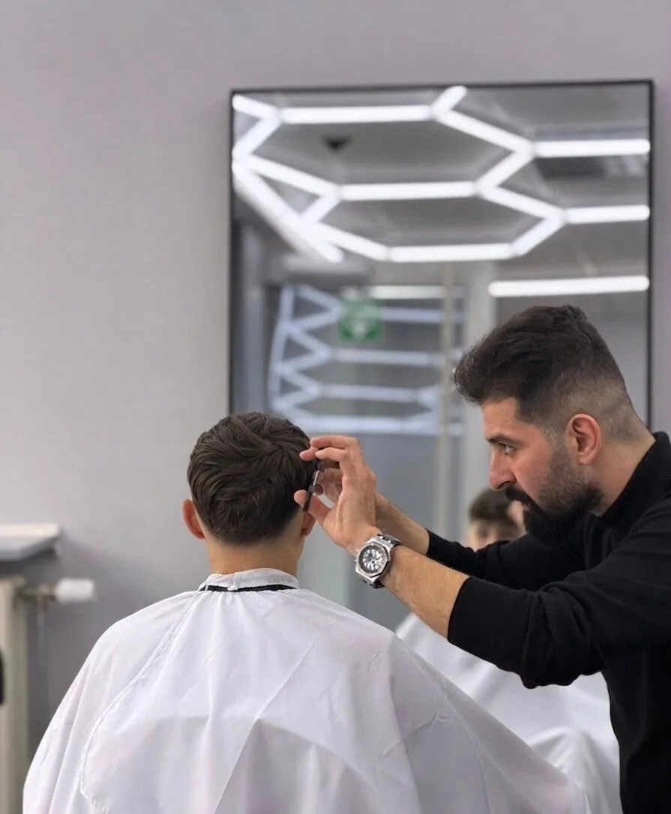
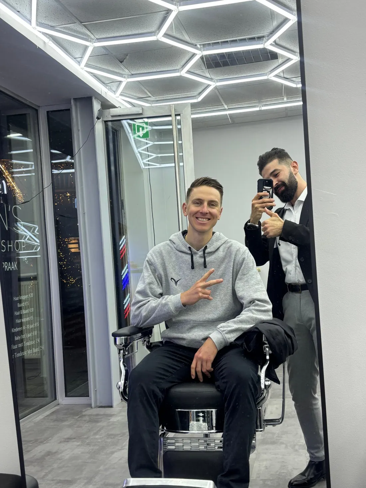
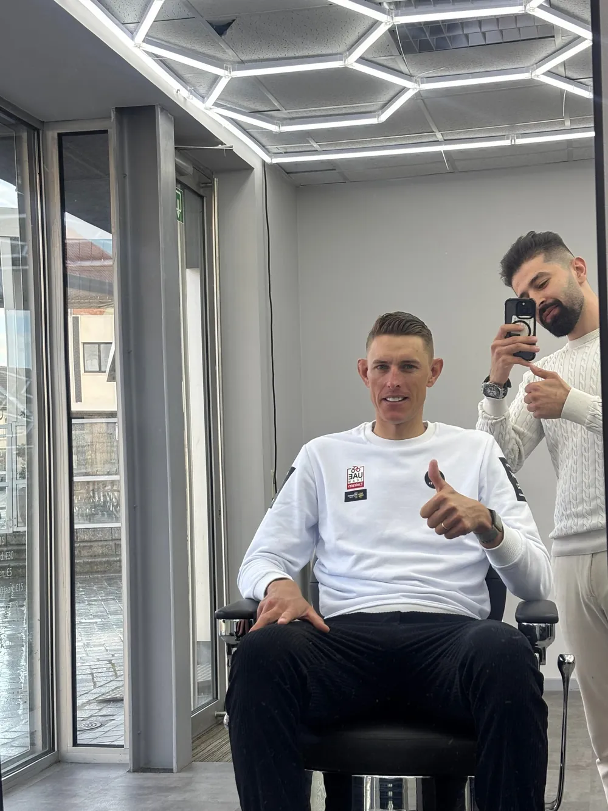
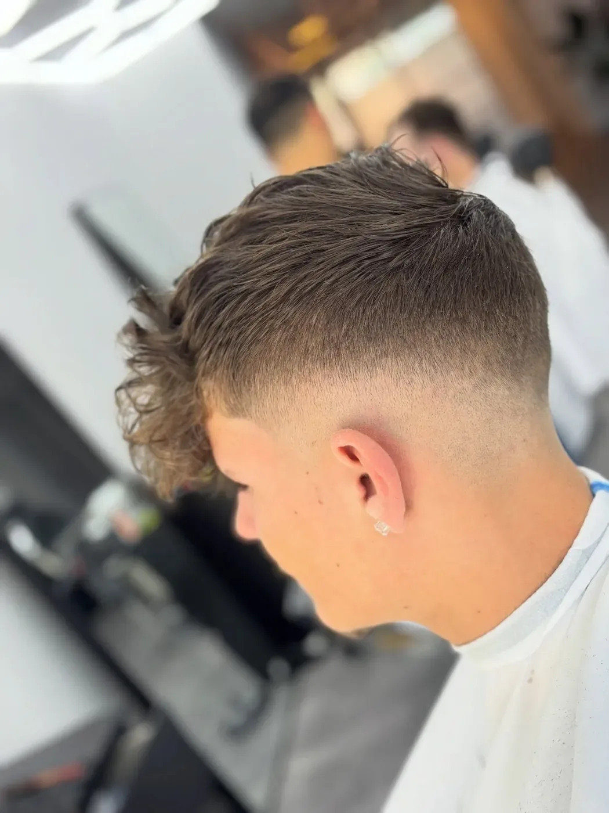
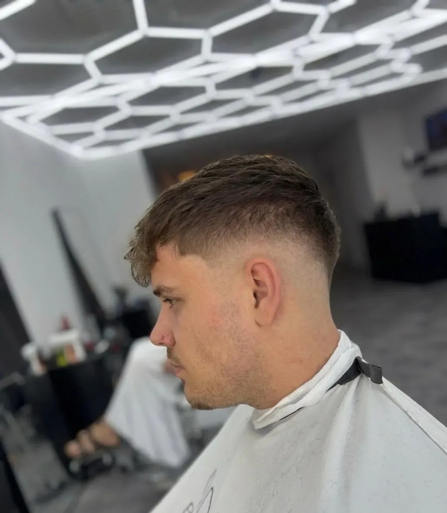
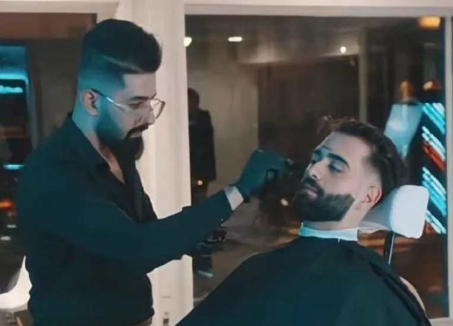
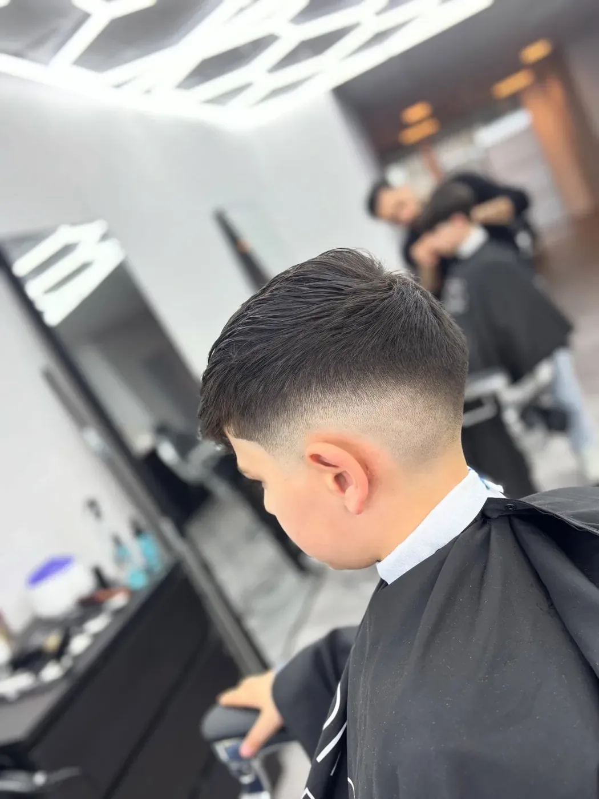
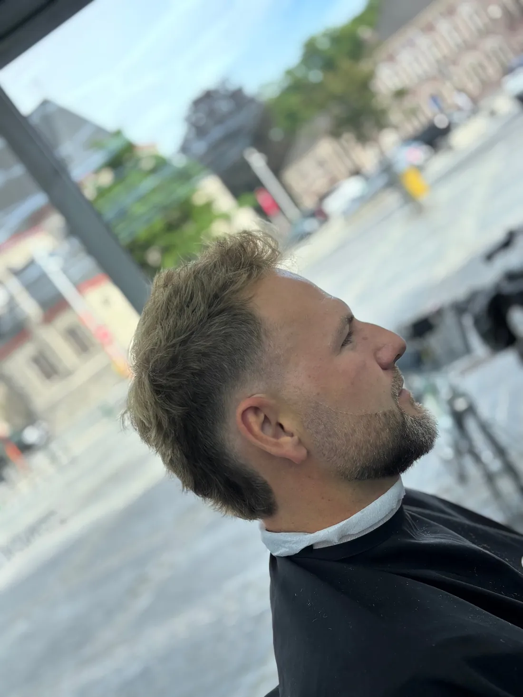

Look sharp,
stay fresh.
Drie barbers aan de Markt. Twee knippen zonder afspraak, Odin zelf werkt op afspraak. En moet je even wachten, dan krijg je iets te drinken.
5,0 op Google uit 313 reviews
Binnenlopen
of boeken?
Allebei goed. Kies wat jou het best uitkomt.

Gewoon binnenlopen
Twee barbers houden hun stoel vrij voor wie spontaan binnenkomt. Even wachten? Neem plaats, er staat iets te drinken klaar.

Bij Odin, op afspraak
Wil je zeker zijn van je plek, of wil je echt bij Odin in de stoel? Boek dan online een vast moment.
Kies je momentPRIJSLIJST
Zo hangt het ook in de zaak.


Wereldkampioen was here.
Tadej Pogačar kwam langs voor een frisse coupe. Ook Nils Politt en Rune Herregodts zaten al bij Odin in de stoel.
Profrenner of jongen van om de hoek: iedereen krijgt dezelfde aandacht.
Recent werk
Fades, tapers en een baard die weer klopt. Elke week komt er nieuw werk bij op Instagram.




gemiddeld op Google, uit 313 reviews. Dit zeggen klanten zelf.
“Eerste keer zonder afspraak langsgeweest. Onmiddellijk een fijn onthaal en vlotte service. Tevreden over de snit. Goed geluisterd naar de klant.”
Miel Oosthuyse · Google“Mijn jongste zoon daarnet voor de eerste keer geweest, zijn haar was echt veel te lang. Maar ze hebben dit Supermooi gemaakt, niet haastig, alles op het gemak en is echt proper.”
Deborah Desmet · Google“Top kapper in Waregem centrum! Nette, precieze knipbeurt en écht aandacht voor detail.”
Voicu Matei · Google“Haar van mijn zoon heel mooi geknipt, de kapper nam z'n tijd om alles nauwkeurig te doen. Vriendelijk personeel.”
Frederik Goerlandt · Google
Tot zo
aan de Markt
Kom gewoon binnen tijdens de openingsuren. Twijfel je of het druk is, of wil je iets vragen? Stuur even een berichtje.
